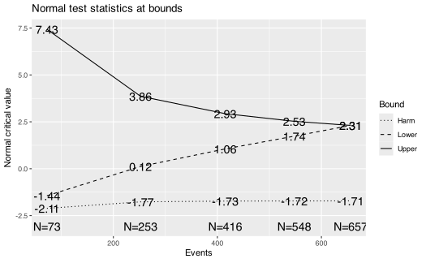
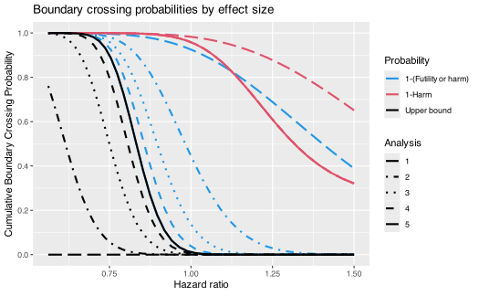
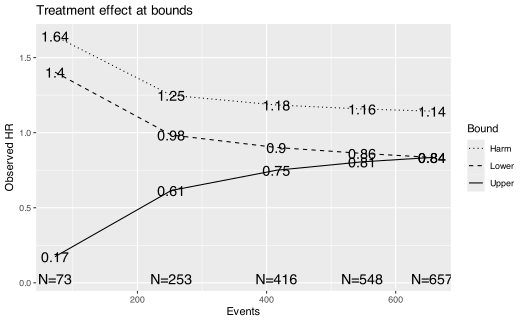
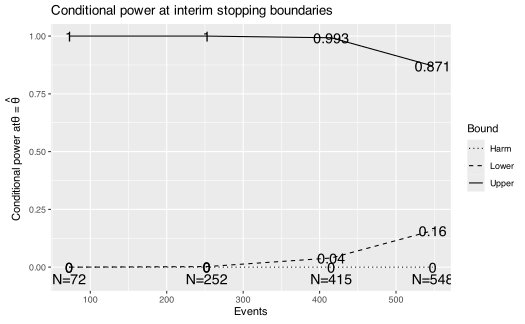
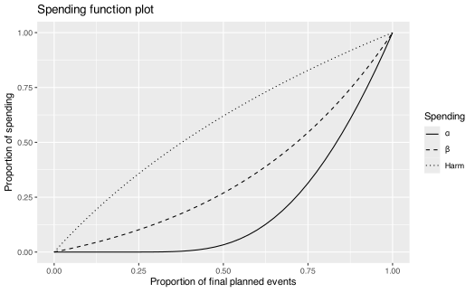
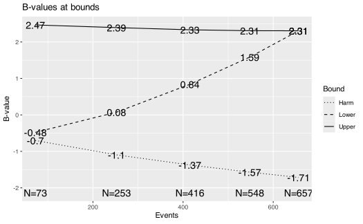

Futility and harm bounds for overall survival monitoring
Keaven Anderson
Source:vignettes/HarmBound.Rmd
HarmBound.RmdIntroduction
When clinical trials include overall survival (OS) as a secondary or
exploratory endpoint, regulators may recommend not only monitoring for
early evidence of efficacy and futility, but also for potential
harm — that is, evidence that the experimental treatment may be
worsening survival relative to control. This article
demonstrates how the gsDesign package supports group
sequential designs with three boundaries: an efficacy
(upper) bound, a futility (lower) bound, and a
harm bound, using test.type = 7 (binding)
and test.type = 8 (non-binding).
Regulatory context: FDA guidance on OS monitoring in oncology
The FDA draft guidance Assessment of Overall Survival Evidence in Support of Accelerated Approval of Oncology Therapeutics (U.S. Food and Drug Administration 2024) describes expectations for monitoring OS in the context of trials that may receive accelerated approval based on surrogate endpoints. The guidance states that sponsors should specify pre-planned boundaries for interim OS monitoring, including criteria for stopping a trial early if there is evidence of a detrimental effect on OS. Key points include:
- Sponsors should include a pre-specified statistical analysis plan for interim OS analyses, including the timing and number of interim looks.
- At a minimum, the guidance expects monitoring for OS harm (i.e., a detrimental trend in overall survival) using pre-specified boundaries.
- Separate from the harm boundary, the sponsor should establish a futility boundary to stop the trial if the experimental treatment is unlikely to demonstrate an OS benefit.
- The statistical plan should describe the spending functions used for each boundary and how the overall Type I error and Type II error are controlled.
This motivates the design framework with test.type = 7
(binding futility and harm bounds) and test.type = 8
(non-binding futility and harm bounds), where three boundaries are
simultaneously specified using spending functions.
The harm bound implemented in gsDesign is a new method that is easy to use — a principled, straightforward extension of the widely used group sequential spending function framework. While we believe this approach is understandable, useful, and flexible, other methods for monitoring potential harm may also be considered. However, there are limitations with this approach. The example presented here has higher mortality risk than many cases. With lower mortality risk, modifications of this approach or other approaches may be preferable.
Design framework overview
In a standard two-sided asymmetric group sequential design
(test.type = 3 or 4), there are two
boundaries:
- Efficacy (upper) bound: Reject \(H_0\) if the test statistic exceeds this boundary (evidence of treatment benefit).
- Futility (lower) bound: Stop for futility if the test statistic falls below this boundary (insufficient evidence of treatment benefit).
The harm bound extension (test.type = 7 or
8) adds a third boundary:
- Harm bound: Signal that the experimental treatment may be harming patients (evidence of a detrimental effect).
The harm bound lies below the futility bound. At each analysis, there are four possible outcomes:
- Cross the efficacy bound (above): Stop for efficacy.
- Between the efficacy and futility bounds: Continue the trial.
- Cross the futility bound but not the harm bound (between futility and harm): Stop for futility.
- Cross the harm bound (below): Stop for harm.
The harm bound is intended so that if a small observed p-value favoring control is observed, the harm bound will be crossed. That is, the harm bound flags evidence that the experimental treatment may be worsening survival — a negative treatment effect on the log hazard ratio scale.
Design with non-binding bounds (test.type = 8)
We demonstrate a survival design using gsSurvCalendar()
with test.type = 8 (non-binding futility and harm bounds).
The scenario is based on a 1:1 randomized trial monitoring overall
survival with:
- Median control survival: 3 years (36 months), i.e., \(\lambda_C = \log(2)/36\).
- Target hazard ratio: HR = 0.75 (25% reduction in hazard).
- Power: 90% (\(\beta = 0.1\)).
- One-sided \(\alpha\): 0.0125 (e.g., the OS component of a trial with multiplicity adjustment).
- Enrollment: Uniform enrollment over 18 months.
- Study duration: 5 years (60 months) with planned analyses at years 1, 2, 3, 4, and 5 from start of enrollment.
The astar parameter controls the total spending for the
harm bound under \(H_0\). We set
astar = 0.1, meaning the total probability of crossing the
harm bound under \(H_0\) is 10%.
Spending function specification
We specify:
-
Efficacy bound: Lan-DeMets O’Brien-Fleming
(
sfLDOF) spending function (conservative, spending little \(\alpha\) at early analyses). - Futility bound: Hwang-Shih-DeCani (HSD) spending function with \(\gamma = -2\) (moderate \(\beta\)-spending under \(H_1\)).
-
Harm bound: Lan-DeMets Pocock
(
sfLDPocock) spending function (spending under \(H_0\) for detecting harm).
x8 <- gsSurvCalendar(
test.type = 8,
alpha = 0.0125,
beta = 0.1,
astar = 0.1,
calendarTime = c(12, 24, 36, 48, 60),
sfu = sfLDOF,
sfl = sfHSD, sflpar = -2,
sfharm = sfLDPocock,
lambdaC = log(2) / 36,
hr = 0.75,
R = 18,
minfup = 42
)Summary
The summary() method provides a concise description of
the design:
cat(strwrap(summary(x8), width = 65), sep = "\n")
#> Asymmetric two-sided group sequential design with non-binding
#> futility and harm bounds, 5 analyses, time-to-event outcome with
#> sample size 1148 and 657 events required, 90 percent power, 1.25
#> percent (1-sided) Type I error to detect a hazard ratio of 0.75.
#> Enrollment and total study durations are assumed to be 18 and 60
#> months, respectively. Efficacy bounds derived using a Lan-DeMets
#> O'Brien-Fleming approximation spending function (no parameters).
#> Futility bounds derived using a Hwang-Shih-DeCani spending
#> function with gamma = -2. Harm bounds derived using a Lan-DeMets
#> Pocock approximation spending function.Detailed boundary table
The gsBoundSummary() function produces a tabular summary
with columns for each boundary. By default, B-value,
Spending, CP, CP H1, and
PP are excluded. We note that for the first interim
analysis, the efficacy bound is so extreme it is effectively impossible
to cross. However, the harm and futility bounds are more moderate,
allowing for early stopping if there is evidence of harm or futility.
The futility bound is an indicator of why bounds are often non-binding —
the futility bound is not intended to be a strict stopping rule, but
rather a signal that the trial may be unlikely to succeed if it
continues. Crossing the harm bound is a stronger indication that the
treatment may be harmful, and the trial should be at least paused with a
recommendation to review the safety and other endpoint data.
gsBoundSummary(x8) |> lt()Conditional power (CP, CP H1) and predictive power (PP) can also be included in the summary. Below we show the full table with all statistics, including conditional and predictive power at each boundary:
gsBoundSummary(x8, exclude = c()) |> lt()Interpreting the boundaries
The design has five analyses at calendar times of 12, 24, 36, 48, and 60 months. At each analysis, the test statistic (Z-value) is compared against three boundaries:
bounds <- data.frame(
Analysis = 1:x8$k,
Month = x8$T,
Events = ceiling(x8$n.I),
Harm = round(x8$harm$bound, 2),
Futility = round(x8$lower$bound, 2),
Efficacy = round(x8$upper$bound, 2)
)
bounds |>
lt() |>
lt_header("Z-value boundaries at each analysis")Decision rules at an analysis where all three bounds are active:
- If \(Z >\) efficacy bound: Stop for efficacy (reject \(H_0\)).
- If futility bound \(< Z \leq\) efficacy bound: Continue the trial.
- If harm bound \(< Z \leq\) futility bound: Stop for futility.
- If \(Z \leq\) harm bound: Stop for harm.
When both lower bounds are active, the harm bound is always at or below the futility bound. If futility is skipped but harm is tested, the harm bound is the sole active lower stopping boundary. At early analyses, the harm and futility bounds may coincide when the harm spending function has not yet allocated sufficient spending to differentiate them.
Boundary crossing probabilities
We examine the operating characteristics under two scenarios: no
treatment effect (HR = 1, i.e., under \(H_0\)) and the design alternative (HR =
0.75). When harm and futility are both active,
x8$lower$prob and x8$harm$prob are reported as
mutually exclusive stopping outcomes. Thus, the probability of crossing
the futility threshold is the sum of the two lower-tail components.
probs <- data.frame(
Scenario = c(rep("Under H0 (HR=1)", x8$k), rep("Under H1 (HR=0.75)", x8$k)),
Analysis = rep(1:x8$k, 2),
Month = rep(x8$T, 2),
`P(Efficacy)` = c(cumsum(x8$upper$prob[, 1]), cumsum(x8$upper$prob[, 2])),
`P(Futility only)` = c(cumsum(x8$lower$prob[, 1]), cumsum(x8$lower$prob[, 2])),
`P(Harm)` = c(cumsum(x8$harm$prob[, 1]), cumsum(x8$harm$prob[, 2])),
`P(Futility or Harm)` = c(
cumsum(x8$lower$prob[, 1] + x8$harm$prob[, 1]),
cumsum(x8$lower$prob[, 2] + x8$harm$prob[, 2])
),
check.names = FALSE
)
probs |>
lt() |>
lt_format(columns = 2:7, decimals = 4) |>
lt_header("Cumulative boundary crossing probabilities")Under \(H_0\), the cumulative probability of crossing the harm bound across all analyses is approximately 0.0417, reflecting the spending allocated to the harm boundary. The cumulative probability of crossing the futility threshold, inclusive of harm, is approximately 0.9888. Under \(H_1\) (HR = 0.75), crossing the harm bound is very unlikely (4^{-4}), since the treatment is beneficial.
Visualization
All standard plot() types are supported for
test.type = 7 and 8 designs, with a third line
(or set of lines) shown for the harm bound.
Z-value boundaries
The default plot shows Z-value boundaries at each analysis. Three boundaries are displayed: efficacy (upper), futility (lower), and harm (below futility).
plot(x8)
Z-value boundaries for non-binding harm bound design
Boundary crossing probabilities
The power plot (plottype = 2) shows cumulative boundary
crossing probabilities as a function of the treatment effect. Three sets
of lines appear: upper bound (cumulative efficacy crossing probability),
1-(Futility or harm), and 1-Harm. Because the
harm boundary is nested below the futility boundary when both are
active, crossing the futility threshold includes both futility-only and
harm stops. The 1-(Futility or harm) curve therefore
subtracts x8$lower$prob + x8$harm$prob, while the
1-Harm curve subtracts harm crossings only. This
aggregation is performed only for plotting: the probability arrays
stored in x8 remain mutually exclusive so that efficacy,
futility-only, and harm outcomes add without double counting. When the
underlying treatment effect favors control, the high probability of
crossing the harm bound indicates that the harm bound is sensitive and
serves its intended purpose.
plot(x8, plottype = 2)
Boundary crossing probabilities for non-binding harm bound design
Approximate treatment effect at boundaries
The effect size plot (plottype = 3) shows the
approximate treatment effect at each boundary. For survival designs,
this is expressed as the approximate hazard ratio at the boundary.
plot(x8, plottype = 3)
Approximate treatment effect at boundaries
Conditional power at boundaries
Conditional power (plottype = 4) at each interim
analysis is shown for all three boundaries. This is generally not a very
useful plot.
plot(x8, plottype = 4)
Conditional power at boundaries
Spending function plot
The spending function plot (plottype = 5) shows the
three spending functions: \(\alpha\)
(efficacy), \(\beta\) (futility), and
harm.
plot(x8, plottype = 5)
Spending functions for non-binding harm bound design
B-values at boundaries
B-values (plottype = 7) are Z-values scaled by \(\sqrt{t}\) where \(t\) is the information fraction. As
discussed by Proschan et al. (2006), the
expected value of B-values increases linearly with the information
fraction under the assumption of a constant treatment effect
(proportional hazards). This linear relationship makes B-values useful
for visual assessment of treatment effect trends across interim
analyses: departures from linearity may suggest non-proportional hazards
or other changes in treatment effect over time. Three boundary lines are
shown: efficacy, futility, and harm.
plot(x8, plottype = 7)
B-values at boundaries
Design with binding bounds (test.type = 7)
For test.type = 7, both the futility and harm bounds are
binding — meaning the computation of the efficacy bound
assumes the trial will stop if either bound is crossed. This
yields a slightly less conservative efficacy bound (easier to cross),
but at the cost of inflated Type I error if the stopping rule is not
strictly followed.
We first create a binding design with \(\alpha = 0.0125\) to compare with the non-binding design above:
x7 <- gsSurvCalendar(
test.type = 7,
alpha = 0.0125,
beta = 0.1,
astar = 0.1,
calendarTime = c(12, 24, 36, 48, 60),
sfu = sfLDOF,
sfl = sfHSD, sflpar = -2,
sfharm = sfLDPocock,
lambdaC = log(2) / 36,
hr = 0.75,
R = 18,
minfup = 42
)Comparing binding and non-binding
comparison <- data.frame(
Bound = c("Efficacy", "Futility", "Harm"),
`Binding (type 7)` = c(
paste(round(x7$upper$bound, 3), collapse = ", "),
paste(round(x7$lower$bound, 3), collapse = ", "),
paste(round(x7$harm$bound, 3), collapse = ", ")
),
`Non-binding (type 8)` = c(
paste(round(x8$upper$bound, 3), collapse = ", "),
paste(round(x8$lower$bound, 3), collapse = ", "),
paste(round(x8$harm$bound, 3), collapse = ", ")
),
check.names = FALSE
)
comparison |>
lt() |>
lt_header("Comparison of binding vs. non-binding Z-value boundaries")Note that the efficacy bounds for test.type = 7
(binding) are slightly lower (easier to cross) than for
test.type = 8 (non-binding). The maximum number of events
for test.type = 7 (639) is also slightly smaller than for
test.type = 8 (657), reflecting the assumption that the
trial will stop at the lower bounds.
gsBoundSummary(x7) |> lt()Efficacy bounds at alternate \(\alpha\) levels
The gsBoundSummary() function accepts an
alpha argument to display efficacy bounds at one or more
alternate \(\alpha\) levels alongside
the original design. Each alternate-alpha column retains the
testUpper schedule from the design, so an efficacy analysis
that was skipped remains inactive and every efficacy characteristic at
that analysis, including cumulative crossing probability, is
NA. Here we show the non-binding design (x8)
with efficacy bounds for both \(\alpha =
0.0125\) (the design level) and \(\alpha = 0.025\):
gsBoundSummary(x8, alpha = 0.025) |> lt()Alternate-alpha summaries are supported for
test.type = 8, where both futility and harm bounds are
non-binding. They are not supported for test.type = 7: a
binding harm or futility bound is outside the non-binding
sequential-p-value framework used for Maurer–Bretz graphical multiple
testing.
Practical considerations
Choice of spending functions
The choice of spending functions for the three boundaries should reflect regulatory and scientific considerations:
-
Efficacy: A conservative spending function such as
Lan-DeMets O’Brien-Fleming (
sfLDOF) is typical, spending very little \(\alpha\) at early interim analyses when limited information is available. - Futility: Moderate spending (e.g., HSD with \(\gamma = -2\)) allows early stopping for futility when the treatment effect is clearly absent.
-
Harm: The Lan-DeMets Pocock
(
sfLDPocock) spending function provides more aggressive spending at early analyses, which is appropriate for harm monitoring since detecting a detrimental effect early is critical for patient safety.
Interpreting the harm bound
The harm bound is intended so that if a small observed p-value favoring control is observed, the harm bound will be crossed. In terms of the test statistic, a negative Z-value indicates that the hazard rate is higher in the experimental arm than the control arm — i.e., the experimental treatment appears to be worsening survival. When the Z-value falls below the harm bound, this constitutes a statistical signal that the treatment may be harmful, and the trial should be stopped with a recommendation to review the safety data.
The harm spending is computed under \(H_0\) (no treatment effect), reflecting the probability of observing an apparent harmful effect by chance when there is actually no true effect. This controls the probability of a false harm signal.
Harm bound capping
In the implementation, the harm bound is automatically capped so it never exceeds the futility bound when both are active. This ensures the ordering harm bound \(\leq\) futility bound \(\leq\) efficacy bound at analyses where all three are tested, while allowing harm to be the active lower boundary when futility is skipped.
When to use test.type = 7
vs. test.type = 8
-
test.type = 8(non-binding) is most often preferred in practice. Regulators will generally expect non-binding bounds, which preserve Type I error control regardless of whether the stopping rules are strictly followed. Since Data Monitoring Committees (DMCs) typically retain discretion to continue or stop a trial based on the totality of the evidence, the non-binding approach ensures that the statistical validity of the efficacy analysis is maintained even if a futility or harm boundary is crossed but the trial continues. -
test.type = 7(binding) is appropriate when there is a firm commitment to stop the trial upon crossing any boundary. This provides a small efficiency gain (slightly easier efficacy bounds and fewer required events) but requires strict protocol adherence. If the trial does not stop after crossing a binding boundary, Type I error may be inflated.
In most regulatory settings, test.type = 8 is the safer
and more common choice.
Binding and non-binding harm monitoring
When futility and harm are both tested at an analysis, the harm boundary lies below the futility boundary and therefore does not add another stopping region. Crossing probabilities are nevertheless partitioned into mutually exclusive harm, futility, and efficacy outcomes.
When harm is tested at an analysis where futility is skipped, the
harm boundary is the active lower stopping boundary. This stopping
probability is included in sample-size derivation and, for
test.type = 7, in the binding efficacy-bound calculation.
For test.type = 8, efficacy bounds continue to use the
non-binding Type I error convention, while power and expected
information account for actual harm and futility stopping.
Adjusting the boundaries
The boundaries are adjustable through several design parameters:
-
Alternate
astar: Controls the Type I error allocated to excess OS harm detection. - Alternate spending functions: Different spending functions for efficacy, futility, and harm boundaries change the aggressiveness of each boundary across analyses.
- Alternate timing of analyses: Changing the calendar times of interim analyses shifts the information available at each look.
Regardless of the statistical design, bounds must be clinically, ethically, and statistically sound. As previously noted, this approach is one option to address the regulatory expectation for OS harm monitoring, but other approaches may also be considered.